Every FILL-LIVE blank is filled. The Fed hiked 25bp to 3.75%–4.00% on Wed Sep 16, unanimous 12–0 — the first hike since July 26, 2023 — and prime moved 6.75% → 7.00% effective Sep 17. The cold open settles Ep 5's HIKE bet in under 60 seconds — then the fight starts: Topic 1 is whether they should have done it at all. (Sharpened Sun AM — Wolf's call.)
| Card | ① THE FIGHT — inflation is 3.4%, the mood is 47.8, the Fed made your money more expensive: were they right, or did they kick 300 million people while they were down? · ② The Fed moved a quarter point, your card moved the same day — who gave them permission? · ③ BNPL is invisible debt — should that even be legal? · ④ Airlines raised your fare 23.4% over a war they didn't start — cost, or cover story? · ⑤ Is the 401(k) match free money, or a raise your boss took back? · ⑥ OUR TOP 3 STOCKS + the next bet |
| Receipts | ① 47.8 vs 3.4% — the second-worst mood ever recorded against inflation 1.4 points over target · ② $45.83 vs $1.04 a month on the identical $5,000 (44× the hike) · verdict trigger: Comment HIKE / Comment HOLD |
| Bet | Does Freddie Mac's 30-year print 7.00% or higher on Thu Sep 24? Last print 6.95% (Sep 17), up from 6.76% |
| Screen | The Debate Board — one scrolling page, questions + sourced data only, no assigned sides |
| Publish | Record AM → edit → ship today, AM–early-PM ET so it indexes |
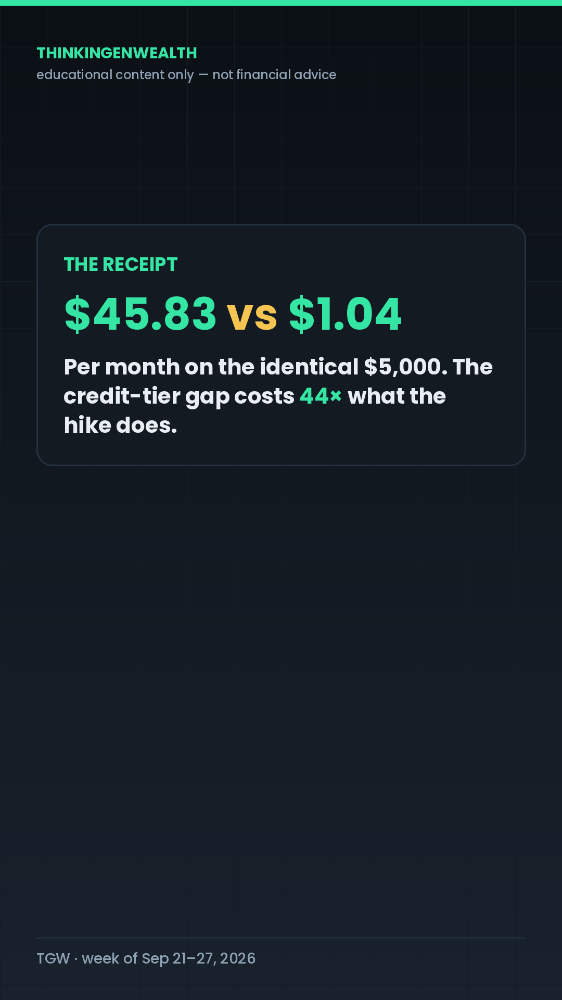
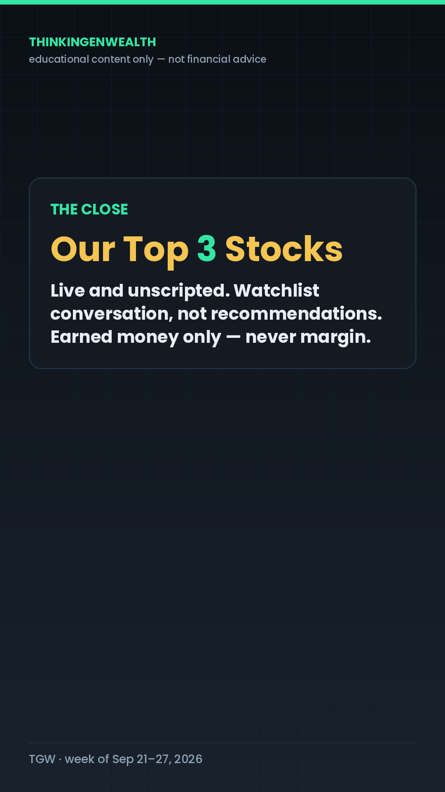
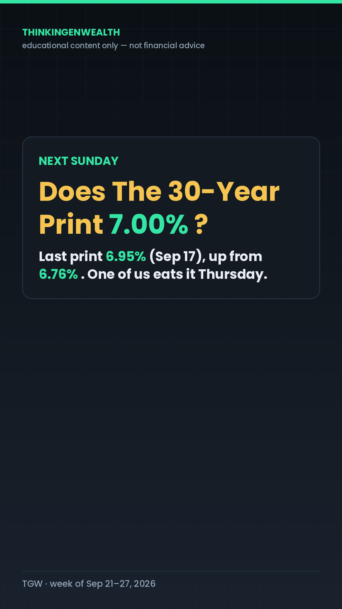
Full word-for-word rundown → This week's podcast.
Warren Buffett stepped down as chairman of Berkshire Hathaway on Friday Sep 18, 2026 — chairman emeritus, still on the board; his son Howard G. Buffett takes the chair; Greg Abel has been CEO since January. His letter line: “Father Time always wins.”
It is a concrete, named, single-company event — the audit's proven shape — and it teaches with zero price-prediction risk, because the thing he actually documented was never a pick. It was what you pay to own the thing. His 2008–2017 million-dollar bet: a plain S&P 500 index fund returned +125.8%; five hedge fund-of-funds averaged +36.3%. He didn't out-pick anybody. He paid less.
| Pillar | P6 NEWS/REACT → P1 TRADE. Concrete, named, single-company event — the shape behind every all-time reach winner (2.2M shutdown, Microsoft, the Korean selloff). |
| Peg | Buffett stepped down as Berkshire chairman Fri Sep 18, 2026; Howard G. Buffett takes the chair; Greg Abel CEO since January. “Father Time always wins.” |
| Who | TikTok/IG: 18–34, 25–34 center (73.2% of TikTok at the last clean pull), male 77%, US 84.8%. YouTube: 35–54 = 53.1%, 45+ = 50.7%, 98.7% non-subscribed. |
| Angle | Two cuts, one recording. TikTok/IG → your first brokerage account (first-milestone). YouTube → you and your partner, 30 years out (career-stage). |
| Post | TikTok 3–5pm ET (reach-spike window, 8 straight pulls inside the 12–7pm core) · Instagram 3pm ET (12–6pm band) · YouTube Short AM–early-PM ET so it indexes. Windows carried from the Sep 13 pull — not re-measured this run. |
| Time | Beat | The line | Cut | Loop |
|---|---|---|---|---|
| 0:00–0:02 | Cold open | “Forty-one thousand, six hundred and fifty-two dollars. That's a fee.” | TUE_V1 | OPEN |
| 0:02–0:10 | Stakes | “…the fee on the first investment account you ever open — therefore let's go find the number he was pointing at.” | TUE_V2 tile | open |
| 0:10–0:25 | Rising · Pt 1 | “That percentage has a name: the expense ratio… but a hundred bucks a year doesn't scare anybody.” | TUE_T2 | small loop closes |
| 0:25–0:42 | Re-hook · Pt 2 | “And this is where most people get got. You never feel this fee, because it is never charged to you.” | TUE_T3 | big loop widens |
| 0:42–0:58 | Payoff · Pt 3 | “The fee took fifty-eight percent of everything you contributed.” | TUE_T4 | payoff lands |
| 0:58–1:08 | Loop-close | “Forty-one thousand, six hundred fifty-two dollars. Still a fee. Now you know where it's printed.” | back to TUE_V1 | CLOSED |
| Platform | The asset | Angle / age cut | Window (ET) | CTA |
|---|---|---|---|---|
| TikTok | The full ~68s vertical, TUE tile set behind green screen | “Your first brokerage account has a price tag” — 18–34, written to a late-twenties viewer | 3–5pm (reach-spike) | Caption line 1: Comment FEE → The Fee Check |
| Same cut, IG-native export, Reels audio kept | Same first-milestone cut; keyword block above the hashtags | 3pm (12–6pm band) | Comment FEE · fixed community line verbatim | |
| YouTube Short | Same recording, different title card + different spoken hook take | “The $41,652 Fee You and Your Partner Never Agreed To” — 35–54, partner/family framing | AM–early-PM (indexing) | Pinned comment: FEE · “full breakdown on the channel” |
| Discord | Companion post: the 30-year fee table at 0.03% / 0.50% / 1.00% | Community — the artifact lands here first | Same day | Soft — “ask me what yours is” |
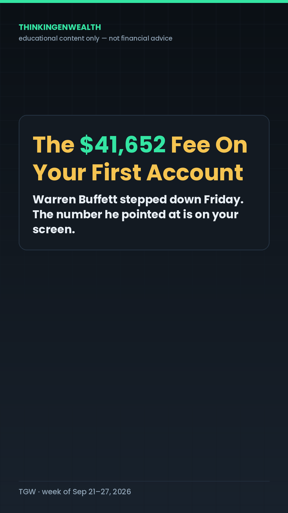
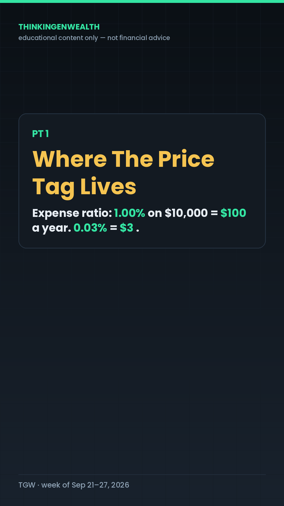
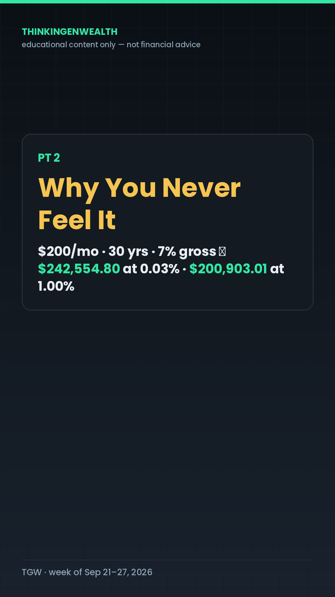
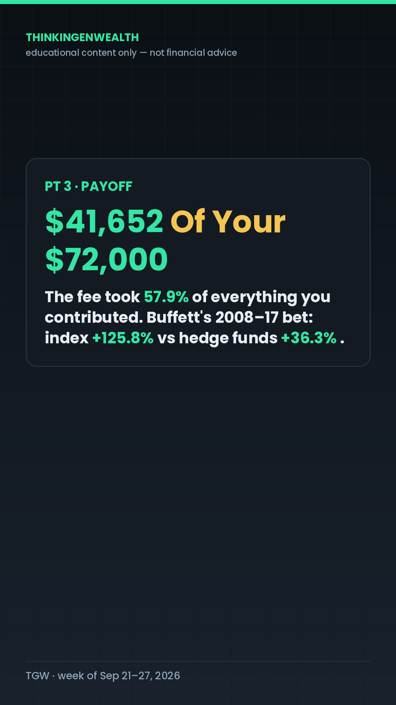
BEAT 1 · COLD OPEN (0:00–0:02) [Start mid-motion. No greeting. TUE_V1, full TGW hook box already on screen.] "Forty-one thousand, six hundred and fifty-two dollars. That's a fee." BEAT 2 · STAKES (0:02–0:10) [Cut to TUE_T2 setting. Calm, not alarmed.] "Not a fee you get billed for. Not a fee you'd ever find on a statement. It's the fee on the first investment account you ever open — and it is the single easiest number in all of investing to look up, which is exactly why nobody shows you where it's printed. Warren Buffett stepped down as chairman of Berkshire Hathaway on Friday, after more than sixty years. His son Howard takes the chair. And the thing he actually proved to regular people wasn't a stock pick — THEREFORE let's go find the number he was pointing at." PT 1 · WHERE THE PRICE TAG LIVES (0:10–0:25) [Cut to TUE_T2 — PT 1 header caption.] "Every fund you can buy — an index fund, a mutual fund, an ETF, anything that holds a basket of stocks for you — charges you a yearly percentage just for holding it. That percentage has a name: the EXPENSE RATIO. Think of it like the sticker on a gallon of milk, except the store never rings it up at the register. It's the price tag on owning the thing. Here's the receipt, and you can check this in about ten seconds: open your brokerage app right now, search any fund, scroll down the fund's own page, and look for the line that says Expense ratio. It's there. It's always there. It's usually printed smaller than everything else on the page. The number itself is tiny-looking, and that is the whole problem. One percent on ten thousand dollars is a hundred dollars a year. Point-zero-three percent on that same ten thousand is three dollars a year. Same ten thousand, same market, ninety-seven dollars of difference — BUT a hundred bucks a year doesn't scare anybody, which is why the next part is the part that matters." PT 2 · WHY YOU NEVER FEEL IT (0:25–0:42) [Cut to TUE_T3 — PT 2 header caption. Mid-video re-hook lands here.] "And this is where most people get got. You never feel this fee, because it is never charged to you. It comes out of the fund itself — a sliver every single day, taken out of the fund's own price before that price ever shows up on your screen. There's no charge to dispute. There's no line item to cancel. By the time you see your balance, the money is already gone. Receipt you can check yourself: pull up any fund's prospectus — that's the legal document every fund has to publish, and it's linked right on the fund's page in your app — and find the table called Annual Fund Operating Expenses. It shows a gross number and a net number. That table is the only place the fee ever appears as an actual dollars-and-cents disclosure. So here's the math on a normal person's account. Two hundred dollars a month. Thirty years. Seven percent a year before fees. At a point-zero-three percent fee, you finish with two hundred forty-two thousand, five hundred fifty-five dollars. At a one percent fee, same money, same market, same thirty years, you finish with two hundred thousand, nine hundred three." PT 3 · PAYOFF (0:42–0:58) [Cut to TUE_T4 — PT 3 header caption. The number lands ON the tile.] "Which means the gap is FORTY-ONE THOUSAND, SIX HUNDRED FIFTY-TWO DOLLARS. And now put that next to what you actually put in: two hundred a month for thirty years is SEVENTY-TWO THOUSAND DOLLARS of your own money. So the fee didn't take a slice. The fee took FIFTY-EIGHT PERCENT OF EVERYTHING YOU CONTRIBUTED — more than half of every paycheck you ever redirected into that account — and it did it through a number printed in eight-point font. That is the bet Buffett won. In two thousand seven he wagered a million dollars that a plain S&P 500 index fund would beat five hand-picked hedge funds over ten years. From two thousand eight through two thousand seventeen, the index fund returned a hundred twenty-five point eight percent. The five funds averaged thirty-six point three. He didn't out-pick anybody. He just paid less to own the same decade. So the action is one thing, and it takes ten seconds: open your app, find the expense ratio on whatever you already own, and write the number down. That's it. Knowing the number IS the move. What you do with it after that is yours — I'm not telling anybody what to buy." BEAT 5 · LOOP-CLOSE + CTA + SIGN-OFF (0:58–1:08) [Cut back to TUE_V1's setting — visual loop closure.] "Forty-one thousand, six hundred fifty-two dollars. Still a fee. Now you know where it's printed. Comment FEE and I'll send you The Fee Check — one page, the tap-path in three apps and the thirty-year table. Zero dollars, no course, no link in a DM. We're breaking this down all week in the Discord — link in bio. It's Wolf, I'm outta here."
Comment FEE and I'll send you The Fee Check — the tap-path to your expense ratio in 3 apps + the 30-year cost table. $0, no course, no link. A 1% fund fee costs $41,652 on $72,000 of your own contributions. → $200/mo · 30 yrs · 7% gross → $242,554.80 at a 0.03% fee → same money at a 1.00% fee → $200,903.01 → the gap, $41,652, is 57.9% of everything you put in → it's never billed — it comes out of the fund's own daily price → find it on any fund's page: the line marked "Expense ratio" → Buffett's 2008–2017 bet: index +125.8% vs 5 hedge fund-of-funds +36.3% (he paid less, he didn't out-pick) → Buffett stepped down as Berkshire chairman Fri Sep 18, 2026 — "Father Time always wins" If this is your kind of thing, the whole breakdown lives in our Discord — link in bio. Educational content only — not financial advice. expense ratio, index fund fees, first brokerage account, what is an expense ratio, investing for beginners 2026, mutual fund fees explained, Warren Buffett steps down, how to check fund fees #ExpenseRatio #InvestingForBeginners #FirstBrokerageAccount #IndexFunds #ThinkinGenWealth #FinancialLiteracy
| Pillar | P1 TRADE — the search-durable money-maker. The 95K–125K vein: candlesticks 98K, top-5-stocks 125K, option chain. Never skip a week. |
| Peg | Our own audience asked for this in their own words. TikTok Search, Sep 13 pull: “how to read candle sticks in trading for beginners.” Aug 16 pull: “long upper wick candlestick.” The Jan-2025 candlestick post still pulls ~111/week at 98K all-time. |
| Who | TikTok/IG 18–34 opening their first chart. Search traffic is the real audience here — it compounds regardless of the posting hour. |
| Angle | Taught on the same company as Tuesday's flagship, on the Fed-hike day. One recording session, two lessons, one name. |
| Post | TikTok 3–5pm ET · YouTube Short AM–early-PM · Instagram 3pm. Evergreen is the one thing that's fine off-peak — Search carries it. |
| Time | Beat | The line | Cut | Loop |
|---|---|---|---|---|
| 0:00–0:02 | Cold open | “This day closed green. Three dollars and ninety-four cents of it never happened.” | THU_V1 | OPEN |
| 0:02–0:10 | Stakes | “…you assume buyers won, and you buy it. But the shape of the bar is telling you who ran out of money that afternoon.” | THU_T1 | open |
| 0:10–0:26 | Rising · Pt 1 | “A candlestick is not a drawing. It's four prices stacked into one shape.” | THU_T2 | small loop closes |
| 0:26–0:44 | Re-hook · Pt 2 | “A wick on its own means nothing. A wick compared to the body means something. So measure it.” | THU_T3 | big loop widens |
| 0:44–1:02 | Payoff · Pt 3 | “$7.52 on every thousand dollars you put in… a wick is history. It tells you what already got rejected.” | THU_T4 | payoff lands |
| 1:02–1:12 | Loop-close | “That day closed green. Three ninety-four of it never stuck. Now you can see it.” | back to THU_V1 | CLOSED |
| Platform | The asset | Angle / age cut | Window (ET) | CTA |
|---|---|---|---|---|
| TikTok | ~72s vertical + a real screen-record of a daily bar tapped open (O/H/L/C) | “Your first chart is lying to you by $3.94” — 18–34 first-chart framing | 3–5pm | Comment WICK → The Candle Card |
| YouTube Short | Same recording, title “The $3.94 Your Chart Didn't Tell You About” | 35–54 cut: “what the tape is actually showing you” — deeper proof beat | AM–early-PM | Pinned: WICK · “full breakdown on the channel” |
| IG-native export, keyword block above hashtags | Same first-chart cut | 3pm | Comment WICK · fixed community line |
| BRK.B · Wed Sep 16, 2026 | Value | What it means |
|---|---|---|
| Open / High / Low / Close | 516.36 / 523.74 / 515.30 / 519.80 | Four prices — the whole candle |
| Body (close − open) | $3.44 | The fat part everyone looks at |
| Upper wick (high − close) | $3.94 | 1.15× the body · 46.7% of the day's range |
| Full range (high − low) | $8.44 | Everything that happened |
| Headline move | +0.59% (prior close 516.76) | What the app told you |
| Buying the high vs the close | $7.52 per $1,000 | 0.75% — 1.9093 shares vs 1.9238 |
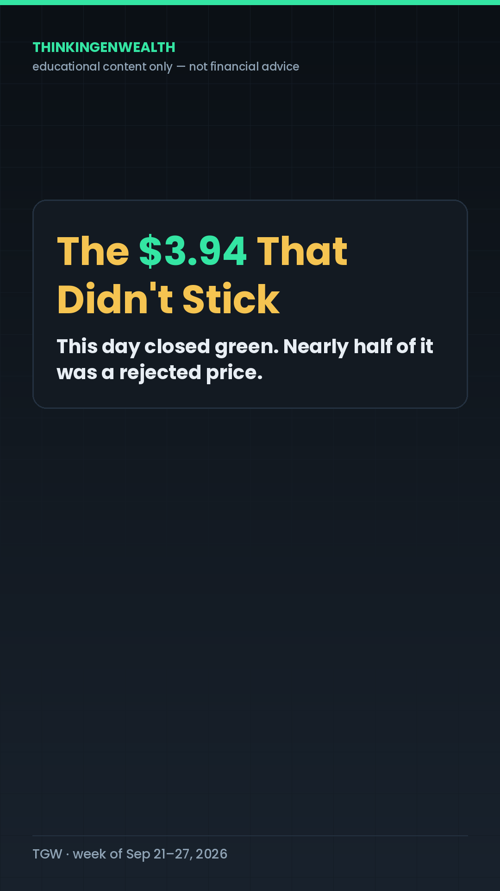
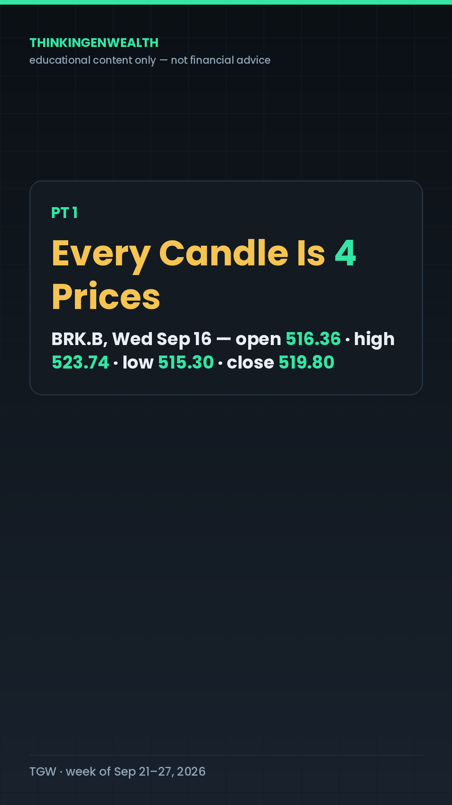
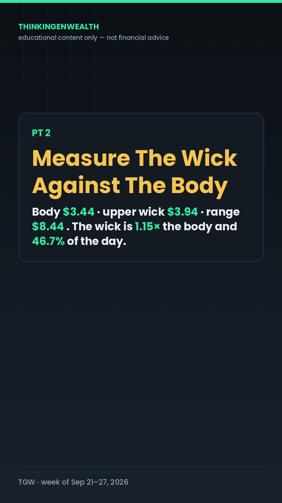
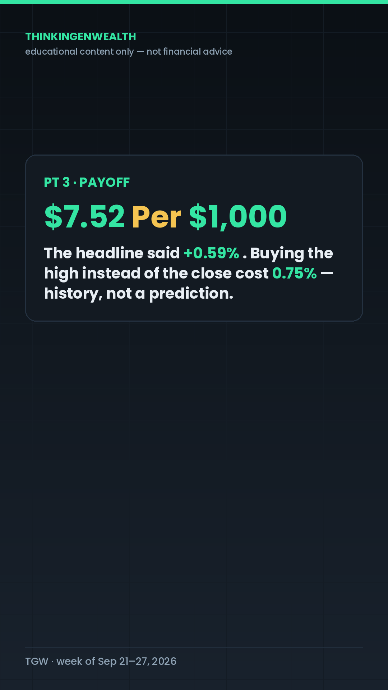
BEAT 1 · COLD OPEN (0:00–0:02) [Start on the chart. THU_V1, full TGW hook box.] "This day closed green. Three dollars and ninety-four cents of it never happened." BEAT 2 · STAKES (0:02–0:10) [Cut to THU_T1.] "If you're opening your first brokerage account, this is the exact moment you get taught the wrong lesson. You look at a green day, you assume buyers won, and you buy it. BUT the shape of the bar is telling you who actually ran out of money that afternoon — and it takes about forty seconds to learn how to read it. Wednesday, September sixteenth, Berkshire Hathaway's B shares. Real numbers, real day, you can pull it up yourself." PT 1 · EVERY CANDLE IS FOUR PRICES (0:10–0:26) [Cut to THU_T2 — PT 1 header caption.] "A candlestick is not a drawing. It's four prices stacked into one shape: where the day OPENED, where it CLOSED, the HIGHEST price anybody paid, and the LOWEST. The fat part in the middle — the part people actually look at — is called the BODY, and it only shows open versus close. The thin lines sticking out of the top and bottom are called WICKS, or shadows, and they show how far the price went and then came back from. Here's the receipt. Open any charting app, pull up a daily chart, and tap on a single bar. It'll show you O, H, L, C — open, high, low, close. Four numbers. That's the whole candle. Wednesday, Berkshire B: it opened at five-sixteen thirty-six, it ran all the way up to five twenty-three seventy-four, it dipped to five-fifteen thirty, and it closed at five-nineteen eighty. THEREFORE the green body everybody saw is only three dollars and forty-four cents tall — and the wick above it is bigger than that." PT 2 · MEASURE THE WICK AGAINST THE BODY (0:26–0:44) [Cut to THU_T3 — PT 2 header caption. This is the re-hook.] "And this is the part almost nobody does, which is why it works. A wick on its own means nothing. A wick COMPARED TO THE BODY means something. So measure it. The body: five-nineteen eighty minus five-sixteen thirty-six. Three dollars and forty-four cents. The upper wick: the high, five twenty-three seventy-four, minus the close, five-nineteen eighty. Three dollars and ninety-four cents. The whole day, top to bottom, was eight dollars and forty-four cents wide. So the upper wick is ONE-POINT-ONE-FIVE TIMES the size of the body and it's FORTY-SIX POINT SEVEN PERCENT of the entire day's range. Nearly half of everything that happened that day happened above where it finished. In plain English: buyers pushed it up there, and then they could not hold it. That's all a long upper wick is — a rejected price. Not a prediction. Not a signal to do anything. A record of a price that got tried and didn't take. Action, and you can do this tonight: pull up any stock you've actually looked at, tap a daily bar, and do the two subtractions — high minus close, and close minus open. If the first number is bigger than the second, you're looking at one of these." PT 3 · PAYOFF (0:44–1:02) [Cut to THU_T4 — PT 3 header caption. Data tile lands here.] "Now here's why it's worth forty seconds of your life. The headline that day was PLUS POINT-FIVE- NINE PERCENT. Green. Fine. BUT if you were the person who bought the top of that wick instead of the close, you paid five twenty-three seventy-four for something that settled at five-nineteen eighty — a three ninety-four gap, which is SEVENTY-FIVE HUNDREDTHS OF A PERCENT, or SEVEN DOLLARS AND FIFTY-TWO CENTS ON EVERY THOUSAND DOLLARS YOU PUT IN. On a thousand bucks, that's the difference between owning one-point-nine-zero-nine-three shares and one-point-nine-two-three-eight shares. It is not a disaster. It is also not nothing — and it is the exact distance between the price you saw on a headline and the price the market was actually willing to keep. Do that a few dozen times and it's real money. And notice what I did NOT say: I didn't say the stock goes up, I didn't say it goes down, and I didn't say buy or sell anything. A wick is history. It tells you what already got rejected. What you do with that is your call." BEAT 5 · LOOP-CLOSE + CTA + SIGN-OFF (1:02–1:12) [Back to THU_V1's chart framing.] "That day closed green. Three ninety-four of it never stuck. Now you can see it. Comment WICK and I'll send you The Candle Card — the four prices, the two subtractions, and the three questions to ask before you read anything into a bar. One page, no course, no link. We're going deeper on chart reads all week in the Discord — link in bio. It's Wolf, I'm outta here."
Comment WICK and I'll send you The Candle Card — the 4 prices in every candle + the 2 subtractions that tell you what a wick means. $0, one page. This bar closed +0.59%. A $3.94 wick says most of that day got rejected. → BRK.B, Wed Sep 16, 2026 — open 516.36 · high 523.74 · low 515.30 · close 519.80 → body = $3.44 · upper wick = $3.94 · full range = $8.44 → the wick is 1.15× the body and 46.7% of the day's range → buying the high vs the close = $7.52 per $1,000 → a long upper wick is a REJECTED PRICE — history, not a prediction → tap any daily bar in your app: O, H, L, C. Do high−close, then close−open. If this is your kind of thing, the whole breakdown lives in our Discord — link in bio. Educational content only — not financial advice. how to read candlesticks for beginners, long upper wick candlestick, candlestick body vs wick, what does a wick mean in trading, reading a daily chart, OHLC explained, technical analysis basics 2026 #Candlesticks #ChartReading #TradingForBeginners #TechnicalAnalysis #ThinkinGenWealth
There is no CPI, PCE, FOMC or jobs report this week — August PCE lands Wed Sep 30, outside the window. So the 4th drop fires on one trigger only.
| Rate | Monthly P&I | vs 6.76% (Sep 10) |
|---|---|---|
| 6.76% | $2,272.42 | — |
| 6.95% (Sep 17, actual) | $2,316.82 | +$44.40/mo · +$532.77/yr · +$15,983 over 30 yrs |
| 7.00% (the trigger) | $2,328.56 | +$56.14/mo · +$673.68/yr · +$20,210 over 30 yrs |
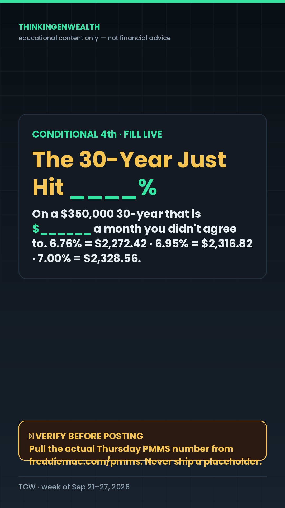
| Pillar | P5 PROOF → P3 BUDGET, in the collab/guest-reaction container — IG's #1 content by roughly 100× (25K vs ~300 for explainers). |
| Peg | The real, verified, two-sided public argument over Howard Buffett taking the Berkshire chair (Fri Sep 18). One side: stewardship and continuity. The other: a public company handing the chair to the founder's son. |
| Who | Male 25–44 wealth-builders — the collab beat's proven audience. First-milestone framing for the 18–34 core. |
| Angle | Steelman both sides, then turn: rich families transfer the position; everybody else has to transfer the paperwork. Nobody in that argument is talking about the mechanism. |
| Post | Instagram FIRST, 3pm ET → TikTok 3–5pm → YouTube Short after. Hard CTAs are weekend-only, so this is the day the comment-trigger can push hardest. |
| Time | Beat | The line | Cut | Loop |
|---|---|---|---|---|
| 0:00–0:03 | Cold open | “Warren Buffett handed his son the chairmanship on Friday. And the whole internet is having the wrong argument about it.” | SAT_V1 | OPEN |
| 0:03–0:12 | Stakes · steelman | “Both sides have a point… but both sides are arguing about who sits in the chair.” | SAT_T1 | open |
| 0:12–0:28 | Rising · Pt 1 | “A board voted, a title changed, a filing went out. That is paperwork.” | SAT_T2 | small loop closes |
| 0:28–0:46 | Re-hook · Pt 2 | “You can write the most beautiful will in the world, and if the beneficiary line says somebody else, the form usually wins.” | SAT_T3 | big loop widens |
| 0:46–1:04 | Payoff · Pt 3 | “Four billion, four hundred ninety million dollars… handed back to strangers, because of blank lines.” | SAT_T4 | payoff lands |
| 1:04–1:14 | Loop-close | “They're arguing about who gets the chair. I'd rather you spend fifteen minutes on the form.” | back to SAT_V1 | CLOSED |
| Platform | The asset | Angle / age cut | Window (ET) | CTA |
|---|---|---|---|---|
| Instagram — FIRST | IG-native reaction reel (the ~100× format), creator screenshot on screen if running option B | First-milestone: “your first account has nobody's name on it” — 18–34 | 3pm, before anything else ships | Comment NAME → The 15-Minute Beneficiary Check |
| TikTok | Same cut, after IG is confirmed live | Same first-milestone cut; keyword block above hashtags | 3–5pm | Comment NAME |
| YouTube Short | Title: “$4.49 Billion Is Sitting There Because of One Blank Line” | 35–54 cut: your family, the old 401(k)s, the employer life policy you forgot | AM–early-PM Sunday if Saturday's slots are full | Pinned: NAME |
| Discord | The debate prompt: “Continuity or nepotism? Pick a side.” | Community — weekend hard CTA is allowed | Saturday | Hard — DM invite |
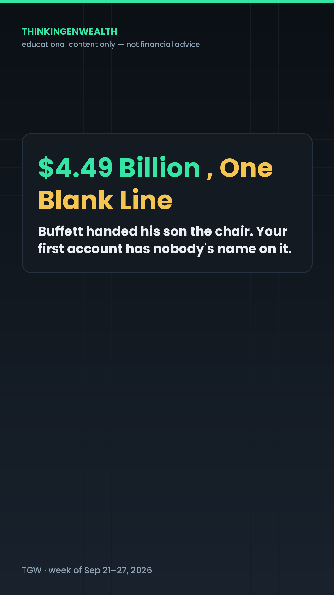
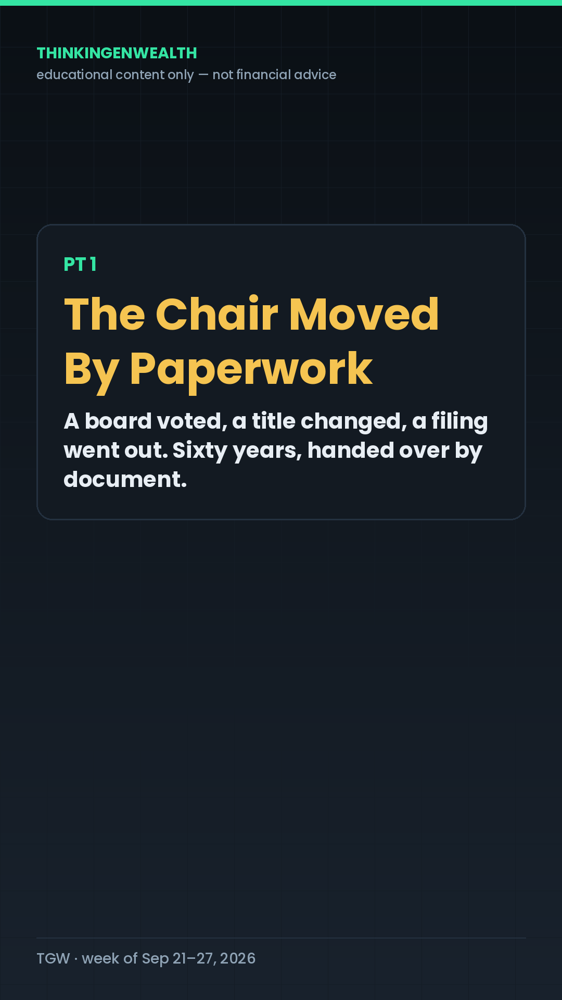
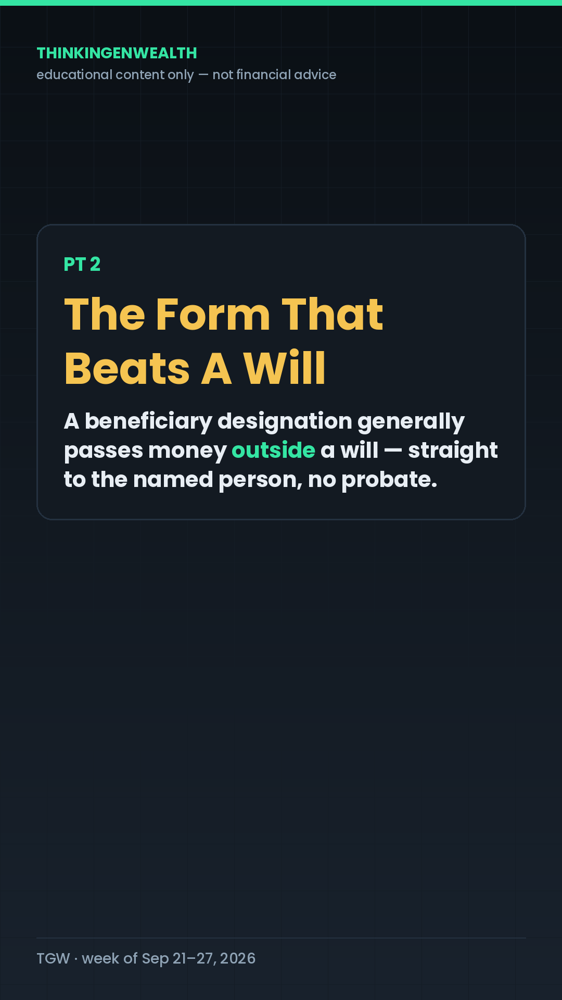
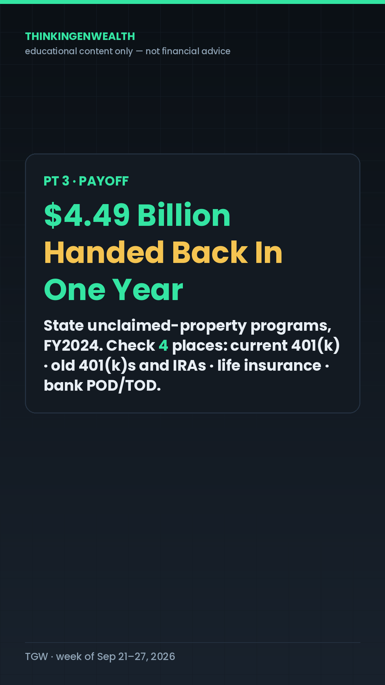
BEAT 1 · COLD OPEN (0:00–0:03) [Start mid-thought. SAT_V1, full TGW hook box. Option B: creator's post on screen here.] "Warren Buffett handed his son the chairmanship on Friday. And the whole internet is having the wrong argument about it." BEAT 2 · STAKES — STEELMAN BOTH SIDES (0:03–0:12) [Cut to SAT_T1.] "Let me be fair to both sides first, because both sides have a point. One side says: it's a family business, Howard's been on that board for decades, and Greg Abel is already the CEO running the company — so the chair is continuity, not a coronation. The other side says: Berkshire is a public company owned by millions of strangers, and handing the chair to the founder's son is exactly the thing we'd roast any other company for. Here's my read — that's a real argument, and I'm not settling it in sixty seconds. BUT here's what's bugging me. Both sides are arguing about WHO SITS IN THE CHAIR. Neither one is asking the question that actually touches your money: how does anything get handed to anybody at all? Because for a family like that, it's a position. For the rest of us, it's a form." PT 1 · THE CHAIR MOVED BY PAPERWORK (0:12–0:28) [Cut to SAT_T2 — PT 1 header caption.] "Start with what actually happened on Friday. A board voted, a title changed, a filing went out. That is paperwork. Sixty-plus years of one of the greatest track records in financial history, and the handoff itself is a document. Now do your version. If something happened to you tonight, what actually moves? Not your intentions. Not what your family assumes. Only what's written down — and specifically, only what's written down IN THE RIGHT PLACE. Here's the receipt, and it takes one minute: open your 401(k) or your IRA, go into Settings or Profile, and find the word BENEFICIARY. Look at what's there. For a huge number of people, that field says 'none,' or it says an ex, or it says a parent from when they were twenty-two and opened it on their first day at a job they've since left. THEREFORE the most important line in your account is one you've probably never read." PT 2 · THE FORM THAT BEATS A WILL (0:28–0:46) [Cut to SAT_T3 — PT 2 header caption. Re-hook lands here.] "And this is the part that surprises almost everybody. A BENEFICIARY DESIGNATION — that's just the line where you name who receives an account — generally passes the money OUTSIDE OF A WILL. Retirement accounts and life-insurance policies move by that form, directly to the name on it, without going through PROBATE, which is the court process that sorts out everything else you own. Which means: you can write the most beautiful will in the world, and if the beneficiary line on your 401(k) says somebody else, the form usually wins. Not because anybody's being cruel — because that's the plumbing. The receipt for that one: pull up any life-insurance policy or retirement account and find the 'Designation of Beneficiary' section. Notice that it asks for a person, not a will. It's asking because it's going to pay that person. And when there's no name — or nobody can find the person — the money doesn't vanish. It goes to the state as UNCLAIMED PROPERTY, and it sits there waiting for somebody to come looking." PT 3 · PAYOFF (0:46–1:04) [Cut to SAT_T4 — PT 3 header caption. Data tile lands here.] "So how big is that pile? In fiscal year twenty twenty-four alone, state unclaimed-property programs RETURNED FOUR BILLION, FOUR HUNDRED NINETY MILLION DOLLARS to the people it belonged to. That's just the money they successfully handed back in a single year — not the total sitting there. Life-insurance death benefits where the company couldn't find the beneficiary are one of the biggest categories in it. Four and a half billion dollars, handed back to strangers, because of blank lines and old names on forms. That is the same mechanism that moved a chairmanship on Friday, running in the other direction. So here's what a regular person actually does, and it's fifteen minutes, not a lawyer: check four places, in this order. One, your 401(k) at your current job. Two, every old 401(k) or IRA you left behind. Three, any life insurance, including the free policy your employer gives you that you forgot about. Four, your bank and brokerage accounts — ask for the 'payable on death' or 'transfer on death' form, which is the same idea under a different name. Name a person. Name a backup. Put a reminder on your phone to look at it once a year. That's it. That's the whole thing. Education, not advice — if your situation is complicated, that's a conversation with an actual estate attorney, not a reel." BEAT 5 · LOOP-CLOSE + CTA + SIGN-OFF (1:04–1:14) [Back to SAT_V1's framing.] "They're arguing about who gets the chair. I'd rather you spend fifteen minutes on the form. Comment NAME and I'll send you The 15-Minute Beneficiary Check — the four places, in order, with the menu path for each. One page, zero dollars. Tell me where you land on the Buffett thing in the Discord — link in bio. It's D Waugh, I'm outta here."
Comment NAME and I'll send you The 15-Minute Beneficiary Check — the 4 places to name a beneficiary, in order, with the menu path for each. $0, one page. States handed $4.49 billion back to owners in FY2024 — a lot of it because of one blank line. → Buffett stepped down as Berkshire chairman Fri Sep 18; his son Howard took the chair → both sides of that argument are about THE CHAIR — none of it is about THE MECHANISM → a beneficiary designation generally passes money OUTSIDE a will, straight to the named person → retirement accounts + life insurance move by that form — not by probate → unclaimed life-insurance death benefits are one of the biggest categories states hold → check 4 places: current 401(k) · old 401(k)s and IRAs · any life insurance · bank/brokerage POD-TOD → name a person, name a backup, re-check it once a year If this is your kind of thing, the whole breakdown lives in our Discord — link in bio. Educational content only — not financial advice. Complicated situations are a conversation with an estate attorney. beneficiary designation, does a will override a beneficiary, unclaimed property, payable on death account, transfer on death, 401k beneficiary, old 401k from a past job, Buffett steps down #Beneficiary #EstateBasics #GenerationalWealth #UnclaimedMoney #ThinkinGenWealth
The draft card is built and the no-repeat check passed. Three blanks must be filled before recording — Costco's Q4 (Thu Sep 24 pm), KB Home's Q3 (Tue Sep 22 pm) and Freddie Mac's PMMS (Thu Sep 24).
| # | The question | Status |
|---|---|---|
| Cold open | Settle Ep 6's 7% MORTGAGE bet (≤60s, then the name retires) | ⚠ FILL-LIVE |
| 1 | Buffett handed the chair to his son — should a public company ever be run like a family business? | ✅ verified |
| 2 | Costco charges a fee for permission to shop — best deal in retail, or the most elegant markup in it? | ⚠ FILL-LIVE |
| 3 | Builders are buying your mortgage rate down — real discount, or a markup with extra steps? | ⚠ FILL-LIVE |
| 4 | Bitcoin's ~$77K and Japan hiked to a 31-year high — should a retirement account hold crypto at all? | ✅ verified |
| 5 | OUR TOP 3 STOCKS — empty frame, never pre-filled — then the next bet | — |
Full draft rundown → This week's podcast. Ep 7's Debate Board gets built at finalization, not in draft.
| Day | Proven pillar (what wins) | Timely peg (what's now) | Audience (who's watching) |
|---|---|---|---|
| Tue | P6 concrete single-company event — the shape behind every all-time reach winner | Buffett steps down, Sep 18 — the biggest name in finance, a named company, zero price-prediction risk | TikTok 18–34 (73.2%) → first brokerage · YouTube 35–54 (53.1%) → you and your partner. One recording, two cuts. |
| Thu | P1 chart education — the 95K–125K search-durable vein, guaranteed every week | Our own Search asked for it verbatim, twice in a month; taught on the Fed-hike-day candle of the same company as Tuesday | Search traffic (82.3% of TikTok at the last pull) — compounds regardless of posting hour |
| Sat | Collab/guest-reaction — IG's #1 by ~100× | The verified two-sided argument over Howard Buffett's appointment | Male 25–44 wealth-builders · IG runs 72–83% non-followers, so the hook does all the work |
| Fri | P6 conditional — allowed only on a real breaking peg | A ≥7.00% Freddie Mac print would be the first 7-handle since January 2025 | First-home shoppers, both age bands — the payment table routes by loan size, not by age |
| Sun | Long-form debate — the only >100% avg-viewed format we've measured | Rate hike + $4.48 gas + a 47.8 sentiment print, all as evidence inside arguments | YouTube's 45+ half (50.7%) gets Topic 4; the culture topics carry the younger clip pulls |
Fix the credit → cheaper borrowing, and business funding when you actually need it. This is where credit scores, APRs, card terms, denials, thin files and business credit live.
This week: the podcast's Topic 1 (lender repricing) and Topic 2 (BNPL) sit entirely in this lane.
Invest what you EARN, through the brokerage. Earned income only. This is where the fee lesson, the chart read and the beneficiary check live.
This week: Tuesday, Thursday and Saturday are all Lane 2, and none of them touches borrowed money.
| Platform | The week | What carried it |
|---|---|---|
| 7,537 followers (+6) · 836 posts · 2 posts shipped (blackout over) | KING OSF guest reel (Sep 14): 4,873 views · 2,536 viewers · 82.9% non-followers · 175 likes · 19 comments · 3 saves · 12 shares · 5 follows. Envisions event carousel (Sep 15): 759 · 360 viewers · 53.4% followers · 44 likes · 6 comments · 1 save. The Sep 3 day-trading reel is at 589. The Fed react, the candle evergreen and the freedom-number collab did NOT ship on IG. | |
| YouTube | 1,544 views (+148%) · 21.0 watch hours (+127%) · +6 subs (+100%) · 457 total | “One Sentence From Kevin Warsh Cost the Market 600 Points” (Thu Sep 17): 1,356 views · 1:26 · 48.4% avg viewed · 30 comments — 88% of the week. Biotech guest clip 54 (22.6%) · KING OSF collab 43 (34.1%) · “$56 Billion Back” follow-up 10 (64.9%). |
| TikTok | 3.2K views (+157.4%) · likes 123 (+179.5%) · comments 12 (+1,100%) · profile views 25 · shares 4 (−77.8%) · viewers 1.7K · new 1.3K | For You back on top: 61.5% vs Search 36.8% — fresh posts fixed last week's unhealthy 82.3%-Search shape. Bond-buyback “Comment RATE” 537 · biotech guest 253 · Tesla evergreen 171 · KING OSF 124 · Warsh “Comment DOTS” Fed-day post 928 all-time (the Sep 18 spike; only 107 counted in-window on a 3-day-old post). |
“buy now pay later door dash” · “How to buy doordash and pay a week or so later” · “stellarFI” · “Stoke option” · “are 2018 teslas reliable.” BNPL is named demand two weeks running — tonight's Ep 6 Topic 2 is exactly this. The 18-month-old DoorDash BNPL post still pulls 60/week.
“The Fed Hiked On The Most Miserable Consumer Ever Measured. Were They Right?” (Sharpened Sun AM: the hike itself is Topic 1 — both sides armed on the board.) Organic debate — no sides assigned, no positions scripted. Chairs are lenses: Wolf = investor/trader, D Waugh = credit/economics. Screen-share is the Debate Board and nothing else.
Through-line (opens cold, resolves in Topic 5): “The Fed just raised the price of money on a country whose mood is the second-worst ever recorded. Were they right — and who pays either way?”
🎬 COLD OPEN — word for word WOLF: "Three years. That's how long it's been since the Federal Reserve raised interest rates — July twenty-sixth, twenty twenty-three, to be exact. Wednesday afternoon, they did it again. Quarter point. Unanimous. Twelve to nothing." D WAUGH: "And last week one of us said it was happening and one of us wasn't so sure. So before anything else — the HIKE bet is settled, on the record, and we're not going to be weird about it." [≤60 seconds total on the settle. Whoever took HIKE lands it; whoever didn't takes it clean. Then the bet retires and the argument begins — Topic 1 is whether they should have done it at all.] WOLF: "So here's the question this whole show circles, and we don't answer it until the end: they just raised the price of money on a country whose mood is the second-worst ever recorded. Were they right? And who pays either way? Because the headline says the economy. The bill says something a lot more specific." D WAUGH: "And we're starting with the fight itself. Five questions. Real disagreements. One number each. Then our top three stocks and a bet on next week. Let's go." --- TOPIC 1 — "Were they right to hike — or did they just kick 300 million people while they were down?" (Screen-share: Debate Board, Topic 1 section. This is the fight. No sides assigned — argue what you actually believe, steelman the other chair first.) 🔁 Transition in — word for word WOLF: "Forget the bet. Here's the real question, and I want us to actually disagree on it: consumer sentiment just printed forty-seven point eight — the second-lowest reading in the history of the survey. Gas is four forty-eight. There's a war setting the price of oil. And the Federal Reserve looked at all of that and decided the problem was that your money wasn't expensive enough. Were they right?" The plain-English setup (say this, don't read it as a list) The Fed has one blunt tool: it makes borrowing more expensive so people and businesses spend less, so prices stop climbing. That works when inflation comes from demand — too much money chasing too few things. It does almost nothing when inflation comes from supply — a shipping lane closing, a barrel of oil going from $70 to $100. The whole argument is which kind of inflation this is. The case FOR the hike (steelman it properly): headline CPI is 3.4% — 1.4 points above the 2% target, and it's been above target for years, not months. Producer prices are running 5.4%, two points hotter than consumer prices, which means the pipeline is still filling. Year-ahead inflation expectations just jumped to 4.6% — once people expect prices to rise, they act like it, and that's the thing the Fed fears most. The labor market is fine: unemployment 4.1%, payrolls +162,000. Warsh's exact line: inflation is "too high, and has been for too long," and this summer's readings "do not tell me that underlying trends have meaningfully improved." Twelve to nothing. Sixteen of eighteen want more. The case AGAINST (steelman it just as hard): strip out food and energy and core inflation is 2.4% — four-tenths from target. The gap between headline and core is almost entirely energy, up 16.3% — gasoline +27.4%, fuel oil +52%. That's a war, not a spending spree. A rate hike does not reopen the Strait of Hormuz. What it does do is raise the cost of every credit-card balance, every car loan, every mortgage quote, for a consumer who is already telling the survey they feel worse than at almost any point in the survey's history. Sentiment at 47.8 is not a demand problem you need to cool; it's a demand problem that's already cooled. And the market said so on the tape: SPY fell 1.6% intraday during the press conference. 🧾 THE RECEIPT — introduce it mid-argument, not up front 47.8 versus 3.4%. The second-worst mood ever measured, against inflation 1.4 points over target. One of those numbers says hike. The other says you've already done enough. Whoever's winning the argument when the board scrolls to it lands it. Teaching beats (both hosts, plain English) - Demand-pull vs cost-push — in one sentence each. This is the whole disagreement, so the audience has to have the vocabulary. - Why core exists — food and energy are stripped out because they swing on things a central bank can't control. The hawk says "core is still above target." The dove says "core is almost there, and you hiked into a war anyway." - What "expectations" means and why 4.6% scares them — if you think prices go up, you buy now and ask for a raise, and both of those make prices go up. - The receipt a viewer can hold: their own gas receipt from last September next to this week's — that's the +27.4%, in their hand. - Label the opinion out loud when you switch from the data to your read. This topic more than any other. 🎯 THE LANDING (~30s to camera) What a regular person actually does: separate the two bills. The part of your budget that's energy — gas, heat, flights — a rate hike can't touch, so budget it as a sinking fund and stop waiting for it to come down. The part that's borrowed money — the card, the car, the mortgage quote — just got more expensive on purpose, and that's the part Topic 2 is about. Education, not advice. 🏁 Scoreboard beat This one gets a VERDICT trigger: "Comment HIKE if the Fed was right. Comment HOLD if they weren't. We'll read the split next Sunday." And it carries a data verdict too: August PCE — the Fed's own preferred inflation gauge — lands Wednesday Sep 30. If core PCE comes in under 2.5%, the doves get to say it on air. --- TOPIC 2 — "The Fed moved a quarter point. Your card moved the same day. Who gave them permission?" (Screen-share: Topic 2 section.) 🔁 Transition in — word for word D WAUGH: "So we disagree about whether they should have done it. Here's the part nobody voted on: whether it was allowed to hit you the same day." The plain-English setup (say this, don't read it as a list) The prime rate is the number most variable credit-card APRs are built on — your card's rate is usually "prime plus something." When the Fed moves, prime moves within a day or two, and your card follows within a billing cycle or two. Prime went from 6.75% to 7.00% effective September 17. Nobody asked you. You didn't reapply. The balance was already there. The CARD Act is the consumer-protection law here, and the nuance is the whole topic: it generally blocks a lender from jacking the rate on a balance you already carry for the first year and from repricing existing balances on a whim — but a variable APR tied to an index like prime is allowed to float, because you technically agreed to the index when you opened the card. So the protection exists and the protection has a door in it. 🧾 THE RECEIPT — introduce it mid-argument, not up front $45.83 versus $1.04 a month, on the exact same $5,000. - The hike: 0.25% on $5,000 carried = $12.50 a year = $1.04 a month. - The credit-tier gap in the same week: a good-tier 17.99% offer against a subprime 28.99% on the same $5,000 = $550 a year = $45.83 a month — 44× the hike. - Context: the Fed's G.19 puts the average APR on accounts assessed interest at 22.15% (Q2 2026) and 20.94% across all accounts. Teaching beats (both hosts, plain English) - What "variable APR" actually means on a statement, and where to find it: the Interest Charge Calculation box on the back page of the bill. - Why a minimum payment doesn't move with the rate the way people assume — the minimum is mostly a percentage of the balance, so a rate move shows up as a longer payoff, not a bigger bill. - The Minimum Payment Warning box — the federally required table on every statement showing what "minimum only" actually costs. That's the receipt a viewer can hold in their hand tonight. 🎯 THE LANDING (~30s to camera) What a regular person actually does: read the two boxes on your own statement — the Interest Charge Calculation box (is your APR variable?) and the Minimum Payment Warning box (what minimum-only costs). Then notice which of the two numbers on the board you can actually move. You can't vote on prime. The 44× number is the one with a door in it. Education, not advice. 🏁 Scoreboard beat This one has a weekly verdict built in: does Freddie Mac's 30-year print 7.00% or higher on Thursday, September 24? Stake it here, settle it next Sunday. Comment-trigger for the audience: "Comment PRIME and we'll send you the statement decoder — the two boxes, circled." --- TOPIC 3 — "Buy-now-pay-later is invisible debt. Should that even be legal?" (Screen-share: Topic 3 section. This topic was named by our own audience — TikTok Search, Sep 13: "how to do pay later.") 🔁 Transition in — word for word WOLF: "So we disagree about what a lender's allowed to do to a debt you can see. Here's a debt nobody can see at all." The plain-English setup BNPL — buy now, pay later — splits a purchase into a handful of payments, usually four, usually interest-free if you pay on time. The mechanism people miss: for most of these plans, the loan mostly doesn't reach your credit file at all. It isn't reported as a tradeline, it doesn't build history, and it doesn't show up when a lender pulls you. So you can be carrying six of them and look, on paper, like you're carrying nothing. Then the asymmetry: a default often does show up. Miss enough payments and it can go to collections, and collections absolutely land on your report. So the upside is invisible and the downside is visible. 🧾 THE RECEIPT Zero. That's how much of a typical pay-in-four plan reaches your credit file while you're paying it on time — no tradeline, no utilization, no payment history, nothing a future lender can price. Meanwhile it is a real obligation against a real paycheck. (Both sides can use this number — that's the point of it.) Teaching beats - Why it's invisible: these are short-term, small-dollar installment products; many providers don't furnish to the bureaus the way a card issuer does. Invisible is a reporting choice, not a legal status. - What "furnishing" means — a lender choosing to send your account behavior to Equifax, Experian and TransUnion. No furnishing, no record, in either direction. - The receipt a viewer can check in 60 seconds: pull your free report at annualcreditreport.com and look for the BNPL you're currently paying. For most people it isn't there. That absence is the lesson. - The real-world edge case: a mortgage underwriter will still ask about your recurring obligations. The report doesn't show it; the bank statement does. 🎯 THE LANDING (~30s) What a regular person actually does: write down every open pay-in-four you have and what date each one hits — because nothing else is tracking them for you. Then treat that total like a bill that exists, because it does. If you want it on your report, that's a conversation about whether being scored helps or hurts you specifically. Education, not advice. Comment-trigger: "Comment LATER and we'll send you the BNPL tracker — one page, every plan, every date." --- TOPIC 4 — "Airlines raised your fare 23.4% over a war they didn't start. Cost — or cover story?" (Screen-share: Topic 4 section.) 🔁 Transition in — word for word D WAUGH: "So one debt is invisible and one repriced itself. Here's a price that did it right out in the open, and everybody just ate it." The plain-English setup CPI is the government's receipt check — every month the Bureau of Labor Statistics prices the same basket of stuff and reports what moved. In the August 2026 report, airline fares were up 2.7% in a single month and 23.4% year over year, inside an energy category that was up 16.3% year over year. Jet fuel is the through-line: energy is the biggest single input an airline can't hedge forever, and this year's energy line is being set by a war around the Strait of Hormuz. The genuine two-sided part: is a 23.4% jump a market correctly re-pricing a thing that was artificially cheap for a decade of fare wars and fuel surcharges nobody itemized — or is it a small number of carriers using a supply story as cover? 🧾 THE RECEIPT +23.4% year over year on airline fares — August 2026 CPI. (One number. Whoever it supports lands it.) Teaching beats - How to read a CPI line: the m/m number is the month, the YoY number is the year, and the category weight tells you how much it moves the headline. Airline fares are a small weight — big move, small pull on the top-line. - Why fuel takes months to reach a fare: carriers buy forward, so today's crude is next quarter's ticket. - The receipt in the viewer's own life: open the airline app, price the same route for the same weekend you took last year, and compare it to what you actually paid. Your own receipt beats an index. - The budget mechanic, not a travel hack: a sinking fund — a separate savings bucket you fund monthly for a known future expense. A trip you take every year is not an emergency; it's a bill with a date on it. 🎯 THE LANDING (~30s) What a regular person actually does: take the trip you actually take once a year, price it today, divide by twelve, and start moving that amount into a separate account monthly. That converts a 23.4% shock into a line in a budget. It doesn't make the flight cheaper. It makes the flight survivable without a card balance at 22.15%. Education, not advice. Comment-trigger: "Comment FARE and we'll send you the sinking-fund sheet." --- TOPIC 5 — "Is the 401(k) match free money — or a raise your boss took back and locked up until you're 59½?" (Screen-share: Topic 5 section. This is aimed at YouTube's 45+ half — 50.7% of the channel.) ⭐ This is where the through-line resolves. 🔁 Transition in — word for word WOLF: "So we opened on whether the Fed was right, and we've spent three topics on who pays when they do it. Last one — and it's the one where the person paying might be you, in a way you volunteered for." The plain-English setup A 401(k) match is your employer putting money into your retirement account based on what you put in — "50% of the first 6%" and similar. The universal framing is free money, always take it. The contested framing: total compensation is a budget. Benefits are funded out of the same pool as wages. So is a match an addition to your pay, or a re-routing of pay you could have negotiated in cash — decided for you, and locked up until you're 59½? Both readings can be true at once, which is exactly why it's a real argument. 🧾 THE RECEIPT The match is a percentage of a number you negotiate. A 50%-of-6% match on $50,000 is $1,500. The same match on $60,000 is $1,800. The match formula never changed — the salary did. The number you can move is the base, and the match moves with it automatically. Teaching beats - Vesting — the schedule that decides when the employer's money is actually yours. Match dollars you leave before vesting were never yours. - The true-up — some plans only match per-paycheck, so front-loading your contributions early in the year can cost you match dollars later. The plan document says which kind you have; most people have never opened it. - The receipt: log into your plan provider, open the Summary Plan Description, and find two things — the match formula and the vesting schedule. Ten minutes, once, forever. - The counterweight both hosts should say out loud: whatever you decide the match is, leaving it unclaimed is the one option with no argument for it. 🎯 THE LANDING (~30s) + THROUGH-LINE RESOLUTION Say the through-line back: were they right, and who pays either way? Five topics in — whichever side of Topic 1 you landed on, the answer to "who pays" isn't "the economy." It's whoever holds the balance, whoever's debt is invisible, whoever books the flight, whoever never opened the plan document. The Fed moved a number by a quarter of a point. Every number that moved more than that this episode was a number attached to a file, a form, or a negotiation. What a regular person actually does: open the Summary Plan Description this week and write down the formula and the vesting schedule. Then put one number on a sticky note for your next review — your base, not your match. Education, not advice. --- TOPIC 6 — 🏆 OUR TOP 3 STOCKS (live, unscripted) The engine does not research, pre-fill, or suggest picks. This section is an empty frame. | Team Wolf | Team D | |---|---| | 1. _______________ | 1. _______________ | | 2. _______________ | 2. _______________ | | 3. _______________ | 3. _______________ | Guardrails, said out loud before the first name: - This is a watchlist conversation, not a recommendation. - Label the opinion: "here's my read." - No price targets. No share counts. No "it's going to." - Earned money only — never borrowed, never margin. - Close on it: "Educational content only — not financial advice." 🎲 THE BET (stake it after the picks) Does Freddie Mac's 30-year fixed print 7.00% or higher on Thursday, September 24? Reference on the board: last print 6.95% (Sep 17), up from 6.76% — a 19bp jump in one week, the highest since January 2025, +69bp year over year. A 7-handle would be the first since January 2025. One of us eats it next Sunday. Audience picks a side: "Comment SEVEN for over, Comment UNDER for under — and we'll send you the rate-gap card either way." --- 🎬 OUTRO — word for word WOLF: "That's the show. We still don't agree on whether the Fed should have done it — and then we spent an hour showing you four numbers that moved more than their quarter point — and every one of them was attached to something you can actually touch. A statement. A report. A plan document. A negotiation." D WAUGH: "Comment HIKE or HOLD on the Fed, comment your side of the mortgage bet, comment the keyword for whichever sheet you want, and come argue with us properly — the whole breakdown lives in the Discord, link in the description. Educational content only — not financial advice." WOLF: "It's Wolf, I'm outta here." D WAUGH: "It's D Waugh, I'm outta here." [Sign-offs land last, clean, untouched. Nothing after them.] --- ✂️ CLIP PULLS (do this in the edit) Pull 3–4 of the hottest REAL exchanges — whatever actually got heated, not a planted line. EYL's caption rule: the caption is the contestable claim that was actually said, not the topic. Candidates likely to produce them: Topic 1 (the CARD Act "door"), Topic 2 (whether invisible debt is a feature or a trap), Topic 4 (match as addition vs re-routing). Cut the IG-native version first.
"Buffett Quit. Gas Is $4.48. Who Is This Economy Building For?" STATUS: DRAFT — built Sun Sep 20, finalized by next week's run. ⚠ THREE FILL-LIVE BLANKS: Costco Q4 (Thu Sep 24 pm) · KB Home Q3 (Tue Sep 22 pm) · Freddie Mac PMMS (Thu Sep 24). Do not record with a placeholder on screen. ✅ NO-REPEAT CHECK PASSED. Berkshire/Buffett, Costco, KB Home and bitcoin/BoJ have never carried a topic. ① is a GOVERNANCE question, not Ep 5's Fed-independence question. ③ is BUYDOWN MECHANICS, not Ep 4's rent-vs-buy. ② is MEMBERSHIP-MODEL economics, not a retail-earnings topic. Every data release enters as evidence, never as a topic. THROUGH-LINE (opens cold, resolves in Topic 4): "Rates are going UP for the first time in three years, gas is $4.48 a gallon, and the national mood is the second-worst ever recorded. So who is actually building wealth right now — and who is just being sold to?" 🎬 COLD OPEN — word for word (fill the bet result first) D WAUGH: "Last Sunday we bet on whether the thirty-year mortgage would print seven percent or higher on Thursday. It printed ____ percent. So one of us eats it." [≤60s on the settle. THEN THE FREDDIE MAC BET RETIRES AS A NAME.] WOLF: "Here's where we are. The Fed is raising rates for the first time in three years. Gas is four dollars and forty-eight cents. Consumer sentiment just printed forty-seven point eight — the second-lowest reading ever recorded. And the most famous investor who ever lived just handed his chair to his son and walked out the door." D WAUGH: "So that's the question for the hour, and we're not answering it until the last topic: WHO IS THIS ECONOMY ACTUALLY BUILDING FOR — AND WHO'S JUST GETTING SOLD TO? Four questions. Then our top three each. Let's go." TOPIC 1 — "Should a public company ever be handed to the founder's kid?" 🔁 WOLF: "Start with the biggest chair in American finance, because it just changed hands on a Friday afternoon and nobody voted on it who wasn't already in the room." SETUP: Fri Sep 18, 2026 — Buffett stepped down as Berkshire chairman after 60+ years, named chairman emeritus, stays on the board. His son HOWARD G. BUFFETT is the new chairman. GREG ABEL has been CEO since January. His letter line: "Father Time always wins." · CONTINUITY READ: chair and CEO are different jobs. Abel runs the company; the chair is culture and stewardship, and Howard's been on that board for decades. · GOVERNANCE READ: Berkshire is owned by millions of strangers, and "the founder's son takes the chair" is the exact arrangement we'd criticize anywhere else. Being good at it historically is not a governance argument. 🧾 RECEIPT: +125.8% VERSUS +36.3% — the 2008–2017 million-dollar bet (index fund vs five hedge fund-of-funds averaging 36.3%; individually 21.7, 42.3, 87.7, 2.8, 27.0). Available to both sides. TEACHING: chairman vs CEO in plain English · what a proxy statement is and where to read it · why the bet was about FEES AND TURNOVER, not genius · this is a governance conversation, not a call on the stock. 🎯 LANDING: read one proxy statement this year — any company you own through any fund — and notice that "who sits in the chair" is a document you're allowed to read. "Comment CHAIR and we'll send you the one-page proxy decoder." TOPIC 2 — "Is paying a fee for permission to shop the best deal in retail, or the most elegant markup in it?" ⚠ FILL-LIVE — Costco Q4, Thu Sep 24 after the close, consensus EPS $6.52. 🔁 D WAUGH: "So a chair changed hands for free. Here's a company that charges you money before you're allowed to buy anything at all — and people love it." SETUP: the MEMBERSHIP MODEL — you pay an annual fee up front, and the retailer runs a thin margin on the goods. FOR: the fee ALIGNS the store with you — it makes money on renewals, not on marking you up. AGAINST: it's a subscription you pay whether you shop or not, it front-loads a cost you stop noticing, and it uses sunk-cost psychology to pull you back through the door. 🧾 RECEIPT — FILL LIVE: ____ membership-fee revenue for the quarter against ____ in net income. (The share of profit that comes from the fee rather than from selling anything is the whole argument, in one ratio.) Also fill: renewal rate, total membership count. TEACHING: break-even math a viewer can do — annual fee ÷ average savings per trip = how many trips the membership has to earn · why analysts stare at the renewal rate · the receipt: pull your card statement for 12 months and count the actual trips · an annual fee is a SINKING FUND line, not a surprise. 🎯 LANDING: count your trips over the last year before you renew anything — gym, warehouse club, streaming bundle. The membership isn't good or bad; YOUR TRIP COUNT decides which one it is for you. "Comment TRIPS and we'll send you the membership break-even sheet." TOPIC 3 — "Is a builder rate buydown a real discount, or a markup with extra steps?" ⚠ FILL-LIVE — KB Home Q3 Tue Sep 22 pm (consensus $0.90) · August new home sales Thu Sep 24 10:00am ET · Freddie Mac PMMS Thu Sep 24. 🔁 WOLF: "So we've argued about a fee you pay to shop. Here's a discount somebody hands you — and you should probably ask where it came from." SETUP: a RATE BUYDOWN is the builder paying the lender money up front to lower your mortgage rate — sometimes permanently, sometimes for the first year or two (a "2-1 buydown": 2 points lower in year one, 1 point lower in year two, then it snaps to the real rate). THE CONTESTED PART: the builder is paying that with money, and the money comes from somewhere. Either it's a genuine incentive funded out of margin in a slow market, or the list price is simply higher than it would otherwise be and you're financing your own discount over thirty years. Both happen. LIVE CONTEXT: the 30-year printed 6.95% Sep 17, up from 6.76% — 19bp in one week, highest since January 2025, +69bp YoY. On a $350,000 30-year: 6.76% = $2,272.42/mo, 6.95% = $2,316.82/mo — +$44.40 a month, +$15,983 over the term, for doing nothing. 🧾 RECEIPT — FILL LIVE: ____ KB Home incentives / average selling price, against ____ August new home sales. If incentives rise while ASP holds, that's one side's argument. If prices fall too, it's the other's. TEACHING: what "points" are (1 point = 1% of the loan, paid up front to lower the rate) · temporary vs permanent buydown, settled by one question: WHAT IS MY PAYMENT IN YEAR THREE? · the receipt: the LOAN ESTIMATE, page 2, Section A — "Points" and lender credits; every borrower gets this by law within 3 business days of applying · the comparison that exposes a markup: same builder, same floor plan, cash price vs financed-with-incentive price. 🎯 LANDING: ask one question out loud — "what's my payment in year three?" — then read Section A of the Loan Estimate. If nobody will answer the first question in writing, that answers the second one. "Comment BUYDOWN and we'll send you the Loan Estimate decoder — page 2, Section A, circled." TOPIC 4 — "Should a retirement account be allowed to hold crypto at all?" ⭐ THE THROUGH-LINE RESOLVES HERE. 🔁 D WAUGH: "So we've spent three topics on who's selling to you. Last one is about what you're allowed to own — and who gets to decide that." SETUP: bitcoin is holding around $77,000 while the BANK OF JAPAN raised its policy rate to 1.25% on Sep 17–18 — a 7–2 vote, the highest Japanese policy rate since 1995, roughly a 31-year high. Japan matters because cheap yen has funded risk assets worldwide for decades; when that money stops being free, everything priced on cheap money gets re-tested. THE REAL QUESTION: a retirement account is a tax-advantaged, long-horizon, hard-to-touch vehicle. Does an asset whose whole character is volatility belong inside a wrapper designed to be boring — and if a plan offers it, is that ACCESS or is that a PRODUCT being distributed to a captive audience? Both readings are honest. 🧾 RECEIPT: 1.25%, ON A 7–2 VOTE — Japan's highest policy rate since 1995. One side reads "the era of free money funding speculation is ending"; the other reads "and bitcoin didn't flinch." TEACHING: what a tax-advantaged wrapper actually does (changes when/whether you're taxed, not what the asset does) · why you can't harvest a loss inside an IRA · the plan-document receipt: your plan's investment menu is in the Summary Plan Description — what you're ALLOWED to hold is already written down · guardrail out loud: nothing here is a recommendation, and never borrowed money, never margin — that rule doesn't change based on the asset. 🎯 LANDING + RESOLUTION: who is this economy building for? Four topics in — a chair that moved by document, a fee you pay before you shop, a discount someone else funded, an asset menu someone else wrote — THE PERSON WHO READ THE DOCUMENT WAS THE ONE DOING THE BUILDING. Everyone else was reading the marketing. Read the one document that governs the thing you already own: the proxy, the statement, the Loan Estimate, the Summary Plan Description. Pick one this week. TOPIC 5 — 🏆 OUR TOP 3 STOCKS — empty frame, never pre-filled. Same guardrails, verbatim. 🎲 THE BET — FILL-LIVE at finalization. Candidates: the Oct 1 Freddie Mac print, or the August PCE release on Wed Sep 30 (the first inflation print after the hike). Stake it with a number and a date. 🎬 OUTRO — word for word D WAUGH: "Four documents. That's the whole show. The proxy, the receipt, the Loan Estimate, the plan document. Every argument we had today was really about who bothered to read one." WOLF: "Comment your side of the bet, comment whichever keyword you want the sheet for, and come argue with us properly — the whole breakdown lives in the Discord, link in the description. Educational content only — not financial advice." D WAUGH: "It's D Waugh, I'm outta here." WOLF: "It's Wolf, I'm outta here." ✅ FINALIZATION CHECKLIST — next run 1. Fill the Freddie Mac Thu Sep 24 print → cold-open bet settle. 2. Fill Costco Q4 → Topic 2 receipt (fee revenue, net income, renewal rate, member count). 3. Fill KB Home Q3 + August new home sales → Topic 3 receipt. 4. Re-verify bitcoin's level and the BoJ rate at record time. 5. Re-verify the AAA gas average and the final September UMich sentiment (Fri Sep 25, 10am ET). 6. Build Ep 7's debate-dashboard.html at finalization. 7. Append the finalized card to the ★ Episode topic ledger.
| Day | Time | Release | Why it matters to us |
|---|---|---|---|
| Mon 9/21 | 6:30am | Goolsbee speaks | First read on the dot plot from inside the room |
| Tue 9/22 | 10:05 / 10:20 / 1:00pm | Williams · Jefferson · Barkin | Three Fed speakers on studio day — any of them could reprice the Thursday bet |
| Wed 9/23 | 9:45am | S&P Global flash PMIs (Sept) | First September activity read; Barr speaks 10:05 |
| Thu 9/24 | 8:30am | Weekly jobless claims (wk ending Sep 19) | The labor check the Fed is hiking against |
| Thu 9/24 | 10:00am | New home sales (August) | Feeds Ep 7's buydown topic · Hammack 8:50, Paulson 10:10 |
| Thu 9/24 | — | Freddie Mac PMMS | ⚠ The conditional-4th trigger. ≥7.00% fires Friday's drop and settles Ep 6's bet |
| Fri 9/25 | 8:30am | Durable goods (August) | Secondary conditional trigger |
| Fri 9/25 | 10:00am | UMich consumer sentiment, final September | Preliminary was 47.8 — second-lowest on record. Hammack 2pm |
⚠ No CPI, no PCE, no FOMC, no jobs report this week. August PCE lands Wed Sep 30 — outside the window, and the first inflation print after the hike. The week is light on data and heavy on Fed speakers — ten scheduled appearances.
| Company | When | Consensus EPS | Use |
|---|---|---|---|
| KB Home (KBH) | Tue Sep 22, after close | $0.90 | Ep 7 Topic 3 — builder incentives / rate buydowns |
| AutoZone (AZO) | Tue Sep 22, am | $54.31 | Consumer-repair-spend colour only |
| General Mills (GIS) · Paychex (PAYX) · Cintas (CTAS) | Wed Sep 23, am | $0.72 · $1.32 · $1.36 | Grocery inflation + small-business payrolls colour |
| Costco (COST) | Thu Sep 24, after close | $6.52 | Ep 7 Topic 2 — the membership-fee model |
| Darden (DRI) | Thu Sep 24, am | $2.05 | Eating-out demand vs a 47.8 sentiment print |
Cousins of our proven IG winners — interviews/collabs/reactions (20–25K) and personal/market reactions. Story + debate + comment-trigger.
48 BNPL doesn't show on your credit report · 49 your freedom number is spending × 25 · 50 the expense ratio in 45 seconds (new this week) · deferred interest vs a real 0% · is college still worth it (NET-cost math) · first-car thin-file credit · wick anatomy · Chime vs a real bank · balance transfers · business credit (Navy Federal biz query)
Full bank with every reel's on-screen text and CTA: TGW Evergreen Reel Bank.md
| Platform | Window | Note |
|---|---|---|
| TikTok | 3–7pm for reach-spikes · 10a–7p for evergreen | Most active Thu Sep 17, 5–6pm — ninth straight pull inside the 12–7pm core, peak sliding later |
| 3pm peak, strong 12–6pm | ⚠ Account-level times and demographics are MOBILE-ONLY. Per-post insights pulled fine. | |
| YouTube | Long-form AM–early-PM (indexing) · Shorts into TikTok's afternoon band | “When your viewers are on YouTube” below threshold — 10th straight week |
| Platform | Age | Gender / geo | Read |
|---|---|---|---|
| TikTok (7d) | 18–24 28.3% · 25–34 48.7% (#1, highest yet) · 35–44 15.4% · 45–54 4.8% · 55+ 2.8% → 18–34 = 77.0% | Male 83% / Female 16% · US 94.8% | A late-twenties channel. Sixth consecutive pull with 25–34 at #1 — routing settled. |
| YouTube (28d, 1.5K audience) | 18–24 0% · 25–34 9.2% · 35–44 19.1% · 45–54 20.1% · 55–64 23.7% · 65+ 27.9% → 45+ = 71.7%, 55+ = 51.6% | Male 93.3% / Female 6.8% · US 74.9% · mobile 77.2% / TV 9.3% | Half the channel is 55 or older. 99.1% of watch time non-subscribed; 94.4% new viewers, 0.2% regular. The Fed react pulled it sharply older. |
| ⚠ MOBILE-ONLY — standing gap | 7,537 followers · guest reel 82.9% non-followers · event carousel 53.4% followers | A reel of a person reaches strangers; a carousel of a room reaches the room. |
3 short-form posts + the Sunday podcast anchor. A 4th drop only when a major peg demands it. The board still renders all 7 days — the non-posting days are PREP/ENGAGE days, so the calendar stays the full week's operating picture. The depth freed up by posting less goes into the posts.
Sell the outcome, never the lesson. Ladder: lesson < material outcome < life outcome. Viewer-subject test: the viewer's life is the subject; the event is only the pretext. Every hook carries a specific number, and the video must earn it with the actual math. Banned: hype, “quit your 9-5,” price predictions, emotional hooks with no number.
CLAIM → MECHANISM → RECEIPT → WORKED NUMBER → ACTION. Every worked number is computed and verified during the run. A script fails review if any point is missing its mechanism, receipt, or action.
Every script is rebuilt onto the 5-beat spine — cold open → stakes → rising loop → payoff withheld to the end → loop-close. But/therefore transitions only, no resets. Visual beat every 5–7 seconds, narrative escalation every 15–20, mid-video re-hook at the halfway mark. Sora never touches the sign-offs, the math, or the education-not-advice rule.